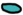

Измерение D - реальность под номером
“ноль-ноль-ди”.
Не входит в Общий Перечень Измерений Всемирья.
Никем не контролируется.
Гранд Эскейп - великие воды, разделяющие Данго Остров и другие объекты суши.
??? - неизвестные земли. Какие загадки они таят?
Хладберин - остров, некогда бывший частью земель
Данго
Острова. Его жители неустанно готовятся к Снежневину.
Данго Остров - самый большой остров Измерения D.
События лора так или иначе начинаются на этих землях.
Гранд
Эскейп
???
Хладберин
Данго Остров